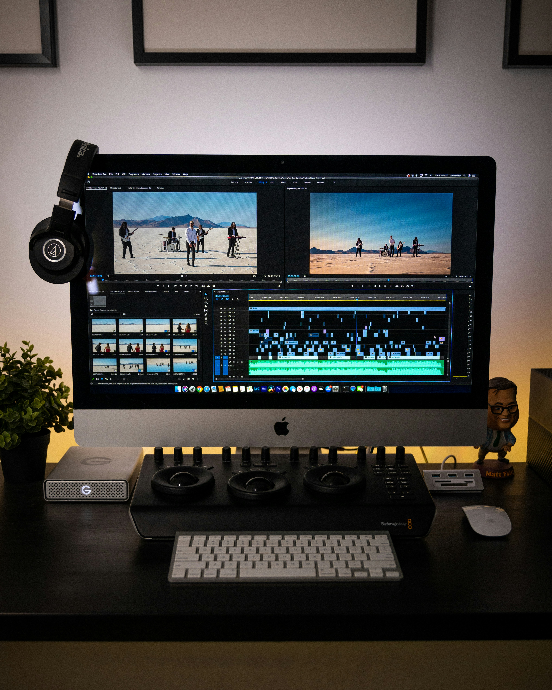

In the digital world, we help you create videos
that leads to massive boosts in the business.
5 REASONS WHY USE OF VIDEO
CONTENT IS IMPORTANT FOR
SOCIAL MEDIA MARKETING
CONTENT IS IMPORTANT FOR
SOCIAL MEDIA MARKETING
01
HIGH
ENGAGEMENT RATES
ENGAGEMENT RATES
Video content on social media is said to have
higher engagement rates due to its visually
appealing nature and emotional connection.
They are more visually appealing and would
grab more attention from users scrolling
their feeds. The video also conveys emotions
and tells stories that resonate with
the audience.
higher engagement rates due to its visually
appealing nature and emotional connection.
They are more visually appealing and would
grab more attention from users scrolling
their feeds. The video also conveys emotions
and tells stories that resonate with
the audience.
02
BUILDS AWARENESS
ABOUT THE BRAND
ABOUT THE BRAND
The video marketing strategy on social media,
helps the brand to showcase their products, values,
and services, thus, increasing their overall brand
awareness. A survey found that about 87% of
marketers believe that the use of video marketing
has affected their business positivity and has led
to increased sales.
helps the brand to showcase their products, values,
and services, thus, increasing their overall brand
awareness. A survey found that about 87% of
marketers believe that the use of video marketing
has affected their business positivity and has led
to increased sales.
03
GREATER
REACH
REACH
Video advertising and social media marketing
can expand your audience, by leveraging the
algorithm of several platforms. As the video is
posted on social media platforms, and gains
likes and views, the same is being signaled to
the relevance of the algorithm, thus attracting
new customers and increasing traffic to
your site.
can expand your audience, by leveraging the
algorithm of several platforms. As the video is
posted on social media platforms, and gains
likes and views, the same is being signaled to
the relevance of the algorithm, thus attracting
new customers and increasing traffic to
your site.
04
BOOST THE
CONVERSION RATES
CONVERSION RATES
SMM through videos, definitely impacts the
conversion rates, and in a servey, about 87% of
marketers confirmed experiencing increased sales.
Video marketing, can capture the attention of
potential customers and build trust through
engaging content.
conversion rates, and in a servey, about 87% of
marketers confirmed experiencing increased sales.
Video marketing, can capture the attention of
potential customers and build trust through
engaging content.
05
HUMANIZES
THE BRAND
THE BRAND
Video advertising on social media helps faster
a personal connection between the company
and its audience, thus showcasing the
personality and values of the brand. This would
also enhance the emotional experience and
increase the likelihood of converting
customers into brand ambassadors.
a personal connection between the company
and its audience, thus showcasing the
personality and values of the brand. This would
also enhance the emotional experience and
increase the likelihood of converting
customers into brand ambassadors.
SERVICES OFFERED BY SOCIOSIP
FOR VIDEO EDITING/ANIMATION
FOR VIDEO EDITING/ANIMATION

FROM SCRIPT
TO SCREEN
TO SCREEN
Currently in the digital
world, video content is
what shines out the
most. We have team
of experts who create
business boosting
videos for you.
world, video content is
what shines out the
most. We have team
of experts who create
business boosting
videos for you.
VISUAL
STORY TELLING
STORY TELLING
Our teams has experties
in creating an overall
immersive experience.
in th form of videos,
and would also add life
to your video message
in creating an overall
immersive experience.
in th form of videos,
and would also add life
to your video message

ADDING
AUDIO
AUDIO
We also add mood
setting high-quality
music to the videos to
set a tone and evoke
emotions among
the viewers
setting high-quality
music to the videos to
set a tone and evoke
emotions among
the viewers
Ready to make your social media Page entertaining through video content?


abdulhuseinjaibir;
lamiya@sociosip.com

ADDRESS
Alexendra Rd,
Singapore 159958

PHONE
+65 83000562
+91 9769652708